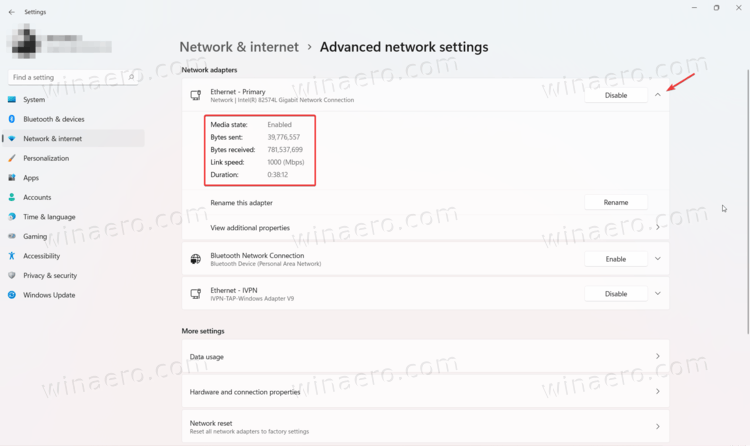
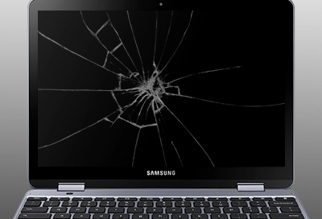
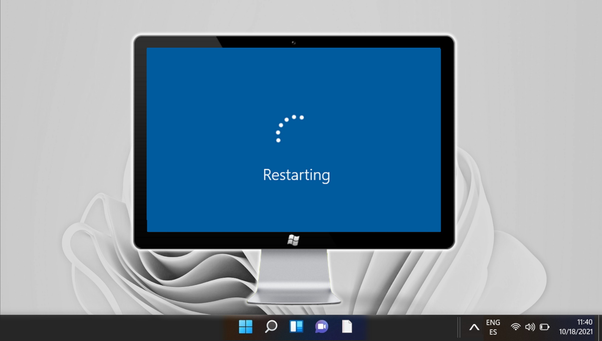
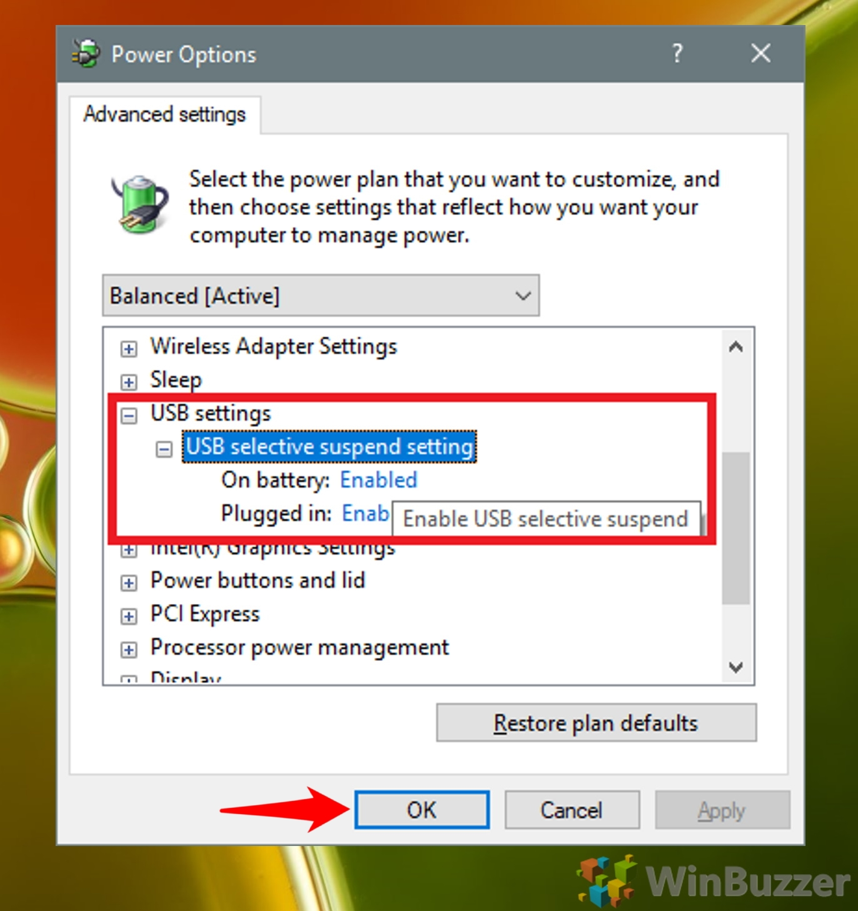
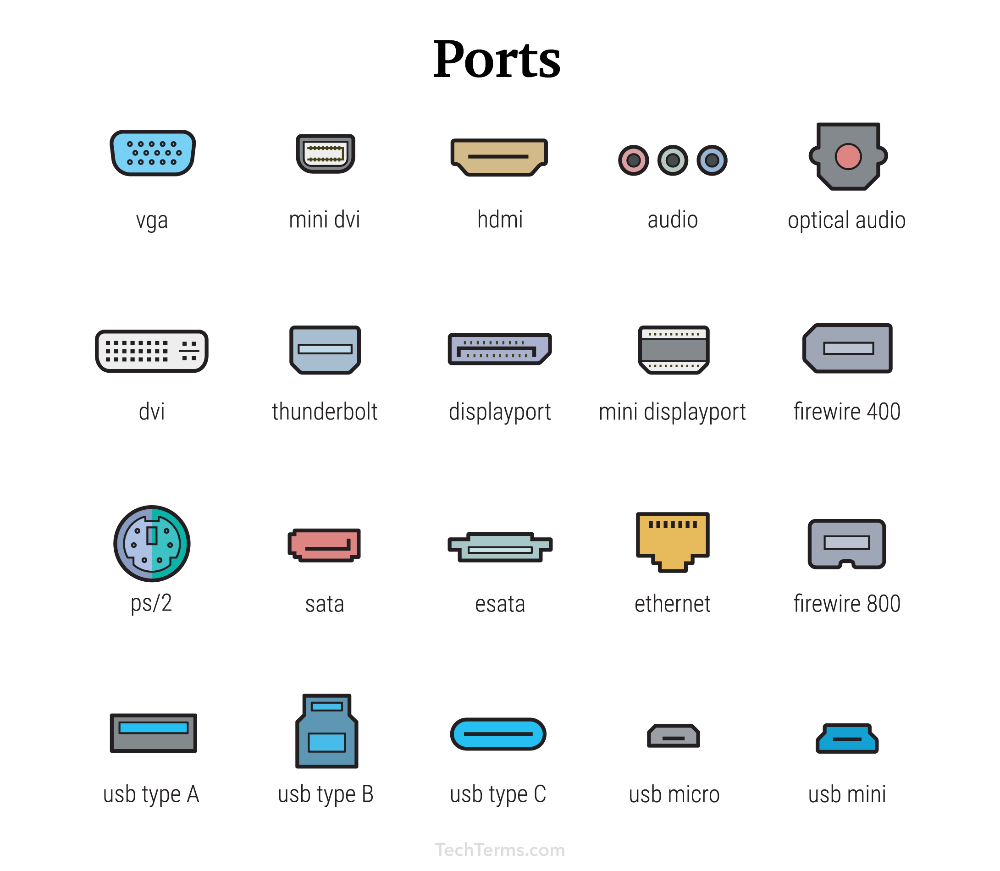
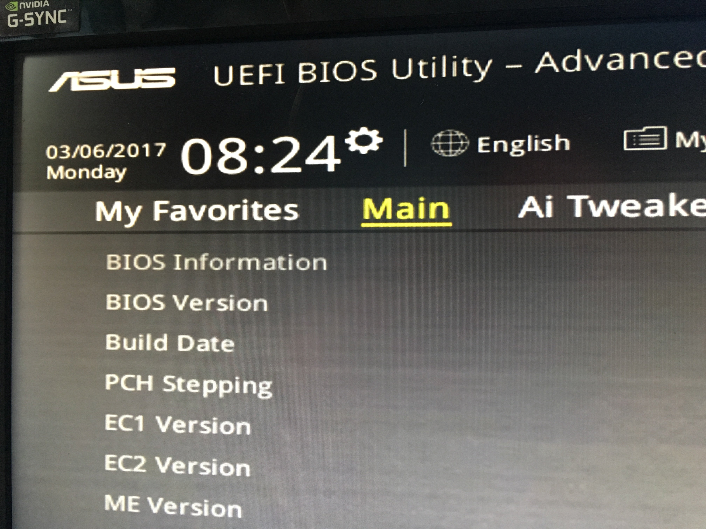

USB PORTS NOT WORKING TROUBLESHOOT
If your USB ports are not functioning, there are several potential causes. Below are steps to troubleshoot and resolve issues with malfunctioning USB ports.
Follow these steps to determine why your USB ports aren't working and how to fix them:
- 1. Check the Device Connection
Verify connection: Ensure the USB device is securely connected to the port.
Test another device: Try connecting a different USB device to the port to rule out device-specific issues.  - 2. Inspect for Physical Damage
Check the USB port: Look for any physical damage inside the port, like bent pins or debris.
Clean the port: Use a can of compressed air to gently blow out any dust or debris from the USB port.  - 3. Restart Your Computer
Reboot the system: Sometimes, simply restarting your computer can fix a malfunctioning USB port, as it refreshes the drivers and connections.
Reconnect after reboot: After the computer has restarted, reconnect your USB device to check if the issue is resolved.  - 4. Update or Reinstall USB Drivers
Check device manager: Open Device Manager (on Windows) or System Information (on macOS) to check for any issues with the USB drivers.
Reinstall drivers: If there’s a problem, uninstall the driver, and restart the system to let it reinstall automatically, or manually update the driver.
- 5. Disable USB Selective Suspend
Change power settings: On Windows, go to Power Options and disable "USB Selective Suspend." This can prevent the system from turning off the USB port to save power.
Test again: After adjusting this setting, reconnect your USB device to check if the issue is fixed.  - 6. Use a Different Port
Test other ports: If one port isn’t working, try using another USB port on your computer. Sometimes, individual ports may fail while others still work.
Use a USB hub: If multiple ports are non-functional, consider using an external USB hub to connect your devices.  - 7. Check for Firmware or BIOS Updates
Firmware updates: Occasionally, firmware or BIOS updates from the manufacturer can address hardware compatibility issues with USB ports.
Check for updates: Visit the manufacturer’s website to check for any updates for your motherboard or system firmware. 
If your USB ports continue to malfunction after following these steps, consider contacting a technician or the device's manufacturer for further assistance. Regularly updating drivers and firmware can prevent such issues.